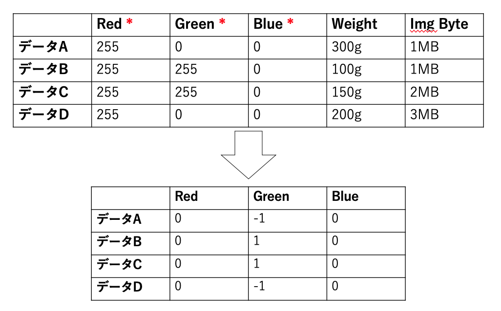
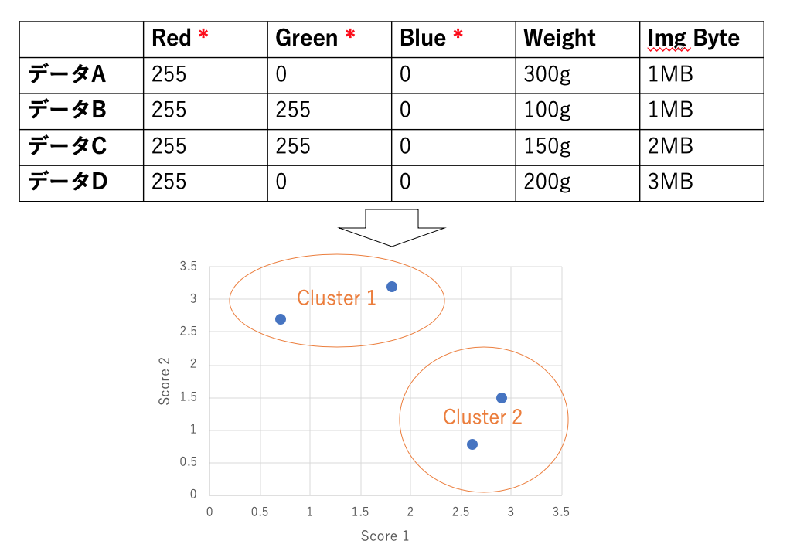
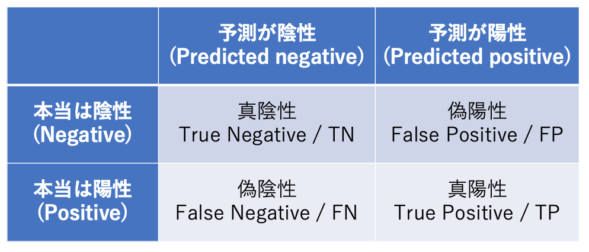
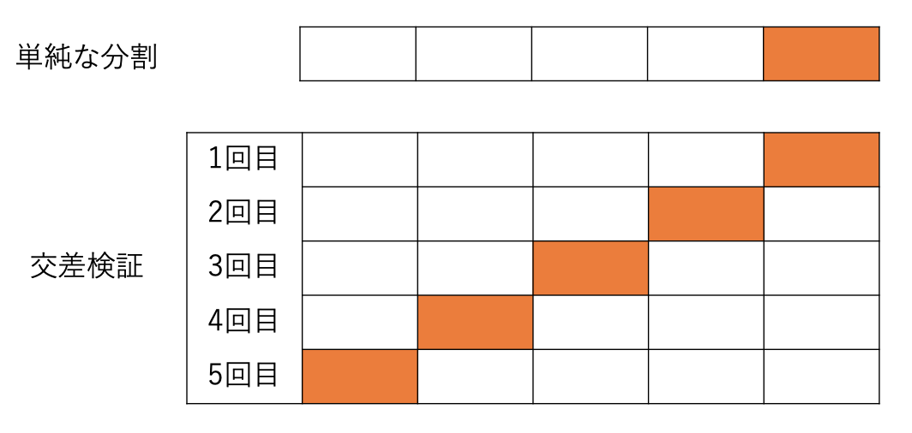

機械学習の基礎¶
この資料及び実習はGoogle Colab (https://colab.research.google.com/?hl=ja ) での実行を想定しています. Google ColabはノートブックというPython REPLを便利にした環境で, よく使われるモジュールが事前にインストールされています. URLにアクセスし, Googleアカウントでログインするとノートブック作成画面(オレンジ色)が出ます. 作成画面右下の「ノートブックを新規作成」ボタンを押すことで, ノートブックが作成されます. 作成されたノートブックには文字を書くセルというスペースがあり, そこにコードを書いてShift+Enterキーを押すとコードが実行されるというものです.
1 : 機械学習とは何か¶
機械学習とは一体どのようなものを言うのでしょうか. これについてある本では以下のような一言でまとめています.
あまりにも簡潔にまとまり過ぎているので, 少し情報を足してみます. 概ね以下のようにまとめられるのでは無いでしょうか.
世の中にはたくさんのデータが存在している.
こういったデータ/データ間には記述が難しい規則性(= 知識)を含む物がある.
記述が難しい規則性をデータから引き出すことで, 実用的な判断を行う.
ここで, 実用的な判断 とか 記述が難しい規則性 とか, 何だか回りくどい表現を使ってしまいました. 以下に簡単に意味を定義しておきましょう.
1.1 : 実用的な判断とは¶
ここでの実用的な判断とは, ある目的を達成するために効率的に自動化された判断だと考えます. 例えば以下に示すようなものが考えられるでしょう.
{kind=link}
コンピュータ操作が人の言葉でできると人間フレンドリーなので, コンピュータに人の言葉を理解させる
工場の生産ラインで検品にかかるコストを減らしたいので, 写真から製品の異常を見つける
化合物の薬効確認には特殊な機械/実験と時間を要するので, 計算を近似することでシミュレーションする
人が情報を処理する仕組みが分かってきたので, コンピュータに再現して人に近い判断が可能か試す
随分わざとらしくカンマで区切っていますが, 文章のカンマ以前の内容がここで言う目的です. 一方でカンマ以降の内容がここで言う効率的に自動化された判断と言うことになります.
1.2 : 記述が難しい規則性とは¶
記述が難しいとはどう言うことでしょうか. 例えば, 上記の目標を達成するのに必要な規則を考えてみましょう. 試しに「コンピュータに人の言葉を理解させる」と言う方向で, 人と話すシステムを書いてみます.
import random
def dora(text):
if "初めまして" == text:
reply = "僕ドラです。"
elif "こんにちは" in text:
reply = "こんにちは。"
elif "こんばんは" in text:
options = ["こんばんは。", "こんばんわ。", "今晩は。"]
reply = random.choice(options)
else:
reply = "すみません、よくわかりません。"
return reply
input_text = "青色たぬき!"
print(dora(input_text))
適切な記述 (人手によるルール作成) を行うためには, 想定し得る入力文や概念の数だけ応答を作成しなければならないですね. こんなif-else文を書き連ねるのは非常につらいです. しかし, これでも文字列を使っているだけまだ人間フレンドリーな方で, データが小数値を取ったらもっと悲惨なことになります. 「室内温度が29.989度以上かつ湿度が80.23%以上かつ室内の人の服の重さ平均が256.17g以上の時に冷房を入れる」 のような制御の判断基準を人手で吟味しながら調整する作業を考えて貰えれば分かるでしょうか.
つまり, 「記述が難しい」とは, このように判断基準が複雑になりすぎることだと言えます.
定義の話が長くなってしまいましたが, 以上が機械学習が以下のようなものを指すと言うことの説明でした.
世の中にはたくさんのデータが存在している.
こういったデータ/データ間には記述が難しい規則性(= 知識)を含む物がある.
記述が難しい規則性をデータから引き出すことで, 実用的な判断を行う.
2 : どんな種類があるのか¶
機械学習にはどのような種類があるでしょうか? この章では, 機械学習の段階的な分類と手法的な分類を確認していきます.
2.1 : 機械学習の段階¶
機械学習の手法的な種類を考える前に、機械学習における以下の2段階についてまとめます.
特徴量エンジニアリング/特徴量抽出
モデリング
2.1.1 : 特徴量エンジニアリング/特徴量抽出¶
一言で言ってしまうと, 判断を行うためにデータについて良い表現を得ることです.
例えばリンゴとバナナの仕分けをする時に, どういう情報に着目するのが良いでしょうか? 重さの違いで分けるというのは, サイズによる重さのバラつきもあり, あまり適切では無さそうです. 写真を取って色で分ければ(青リンゴなどの例外をのぞいて), 綺麗に分けられそうです. つまり、リンゴとバナナというデータを分ける場合には, 色の情報が「判断のための良い表現である」と言えます.
{kind=link}
あるいは, もっと数値的に, データのスケールを統一する場合などもあります. 0から255までを取るデータと-10から10までを取るデータをそのままのスケールで判断に利用するよりも, どちらのデータも-1から1までで収まるデータに変換をした方がコンピュータ的には判断がしやすいのです.
{kind=link}
データスケールの統一をpythonで行う方法はいくつか考えられますが, 一つは以下のようなものです.
# データや計算を扱うモジュールのロード
import numpy as np
# データの初期化: 9つ特徴量(説明変数)のデータを3つ含む行列
x = np.array(
[[1, 2, 3, 4, 5, 6, 7, 8, 9],
[11, 12, 13, 14, 15, 16, 17, 18, 19],
[6, 5, 4, 3, 2, 1, 9, 8, 7]]
)
# データのスケールを統一するクラスのロードと宣言
from sklearn.preprocessing import StandardScaler
scaler = StandardScaler()
# スケーリング
scaled_x = scaler.fit_transform(x)
このような良い表現を探す段階を特徴量エンジニアリングとか特徴量抽出とか言います.
人が経験や知識を持って良い表現を選択することを特徴量エンジニアリング
選択すらもコンピュータにやらせることを特徴量抽出
と呼ぶことが多いようです.
{kind=link}
2.2 : 手法の種類¶
機械学習は学習時のデータの与え方によって以下の3つに大別されます.
教師あり学習
教師なし学習
強化学習
2.2.1 : 教師あり学習¶
教師あり学習は, 判断するためのデータと正解の判断結果の両方を与えて判断基準を探す学習です.
事例1: Aというデータはリンゴと判断するのが正解だった
事例2: Bというデータはバナナと判断するのが正解だった
事例3: Cというデータはバナナと判断するのが正解だった
といった具合に正解となった判断をお手本にして判断基準を決めていく学習です.
これまで「判断」という言葉を使ってきましたが, 教師あり学習ではタスクが大きく二つに分かれます. 一つはこれまで考えてきたようにデータからリンゴとバナナ等のカテゴリーを判断する クラス分類 タスクです. もう一つはデータから何かしらの数値を判断する 回帰 タスクです.
2.2.2 : 教師なし学習¶
教師なし学習は, データだけを与えて良い表現を獲得する学習です.
コンピュータに取って良い表現を得る為に先ほどのような観察, 先行研究に頼るのも手段のひとつですが, そのような手がかりがなかった場合にデータの分布から機械的に良い表現を抽出することができます. 例えば、リンゴとバナナの判別においてRGBの3原色の内データの分散を取って見て G(緑)の分散が大きいと分かれば, 3原色の中でも緑成分に注目するのが良い表現だと言えます. このようにたくさんの特徴量からより良いデータを探す学習を 次元削減 と言います. データリテラシーで扱った主成分分析(PCA)等がこれに当たります.
また, ここで「良い表現」は, コンピュータにとっての良い表現ではなく, 人にとって良い表現な場合もあります. 次元削減を行ってデータの分布をうまく表す二次元平面上の表現を得る 可視化 も一つです. その他にも, データの分布にはどのようなまとまりが存在しそうかを得る「クラスタリング」があります.
{kind=link}
このように, 教師なし学習は教師となる情報を与えられない代わりに, データ自体から得られる情報を教師代わりに学習を行います.
2.2.3 : 強化学習¶
強化学習は, ある環境下において何かしらの行動を取る場合に価値のもっとも大きな行動を判断させる学習です.
例えば囲碁等のボードゲーム(環境)において価値が最大となるのはゲームに勝つ結果を伴う行動です. 盤面というデータが与えられた時に適切な手を判断するという点では教師あり学習に近いですが, 教師あり学習は一つ一つの盤面に正解の行動がある一方, 強化学習では正解はあくまでもゲームでの最終的な勝ちとなります. 対話システム, ロボット制御, 経営戦略分析等幅広く用いられる手法ですが, 少し状況が特殊なため今回は割愛します.
3 : どうやって学習するのか¶
この章では, ここまで説明してきた機械学習モデル(回帰, クラス分類)の学習について雰囲気を掴みましょう. 視覚的な解説をするために実装コードが少し複雑になっています. 必ずしも読める必要はありません.
3.1 : 回帰タスク¶
回帰タスクは, データから数値を予測するタスクでした. つまり, データをx, 数値をyとした場合, \(y=Wx+b\) の関係で表すわけです. 回帰タスクにおける学習とは, xとyとのペアから, 判別するのに適切なWとbを探す作業になります. これは, \(Wx+b\) と \(y\) との差が最も小さくなる, つまり \(E(x, y) = (Wx+b-y)^2\) という関数の出力を最適化する作業と置くことができます. これを 最小二乗法 と言います. 関数の出力は関数を微分することで最小化できます. これを 勾配降下法 と言います.
以下では, 回帰の最適化を可視化してみます. まずは可視化しやすいような簡単なデータを作成します.
import jax.numpy as np
from jax import random
import matplotlib.pyplot as plt
key = random.PRNGKey(0)
def true_func(x):
"""データの裏に想定したい関数
y = 1.2x + 0.1 とする."""
y = 1.2*x + 0.1
return y
def init_toy_data(shape):
"""擬似的なデータを作る.
学習データのため, yの値に少しだけノイズを乗せる."""
x = random.randint(key, shape, 0, 100) * 0.01
y = true_func(x)
noise = random.normal(key, y.shape) * 0.05
y = y + noise
return x, y
x, y = init_toy_data((100, 1))
plt.scatter(x, y)
plt.plot(x, true_func(x), color='y')
plt.xlabel("Explanatory")
plt.ylabel("Objective")
plt.savefig('toy_data_regression.png')
{kind=link}
上のようなデータセットを作成しました. 青い点は一つ一つがデータであり, 黄緑色の線は裏に想定している関数(機械学習で見つける法則性)です.
では, 最適化をしていきましょう.
import copy
import jax.numpy as np
from jax import random, grad, jit
import matplotlib.pyplot as plt
import matplotlib.animation as animation
from init_toy_data import true_func, init_toy_data
x, y = init_toy_data((100, 1))
key = random.PRNGKey(0)
# 最適化の定数と回帰モデルのパラメータ
epochs = 100
data_size = len(x)
batch_size = 32
if data_size % batch_size == 0:
iteration = data_size // batch_size
else:
iteration = data_size // batch_size + 1
learning_rate = 0.7
params = {"W": random.normal(key, (1, 1)), "b": np.array([0.])}
params_history = [copy.deepcopy(params)]
def predict(params, x):
"""回帰モデルの予測関数"""
y = np.dot(x, params["W"]) + params["b"]
return y
def calc_loss(params, x, y_true):
"""最適化をすべき損失関数"""
y_pred = predict(params, x)
diff = y_true - y_pred
loss = np.mean(diff**2)
return loss
# 損失関数を自動的に微分する
grad_func = jit(grad(calc_loss))
# 最適化処理
for e in range(epochs):
for i in range(iteration):
start = batch_size * i
end = min(batch_size*(i+1), len(y))
bx = x[start:end]
by = y[start:end]
loss = calc_loss(params, bx, by)
grads = grad_func(params, bx, by)
for k in params.keys():
params[k] -= learning_rate * loss * grads[k]
params_history.append(copy.deepcopy(params))
# gif画像の描画
fig = plt.figure()
ax = fig.add_subplot(1, 1, 1)
def update_func(i):
ax.clear()
ax.scatter(x, y)
ax.plot(x, true_func(x), color='y')
ax.plot(x, predict(params_history[i], x), color='r')
ax.set_xlabel('Explanatory')
ax.set_ylabel('Objective')
ani = animation.FuncAnimation(fig, update_func, frames=101, interval=100, repeat=True)
ani.save("fit_linear_regression.gif", writer="imagemagick")
{kind=link}
このように, 青色で書かれた各データ点と回帰直線との距離が最小になるように最適化がされていきます. ここまで色々とコードを書きましたが, 実際に学習をする時にはここまで面倒臭いことはしません. 実際には,
# データの初期化: yには乱数でノイズを乗せている
x = np.random.randint(low=0, high=100, size=(100, 1)) * 0.01
y = (1.2*x+0.1) + np.random.normal(size=(100, 1))*0.05
# モジュールのロード
from sklearn.linear_model import LinearRegression
# 回帰モデルの呼び出し
regressor = LinearRegression()
# 回帰モデルの最適化(xは説明変数, yは目的変数です)
regressor.fit(x, y)
# 回帰モデルの推論
model.predict(x)
# モデルの係数(Wx+bのWとb)
print(model.coef_, model.intercept_)
とやるだけで済んでしまいます.
3-2: クラス分類タスク¶
クラス分類タスクは, データからデータの属するカテゴリーを予測するタスクでした. より正確にはカテゴリーそのものを返すよりも, カテゴリーに属するかどうかの確率を求めるタスクです. データxが起きた時に, それがあるカテゴリーに属する確率は \(p(y|x)\) として表すことができます. このような考え方を条件付き確率と言います. 後はデータがカテゴリーに属する場合は \(p(y|x)\) を大きくし, 属さない場合は小さくして最適化を行います.
回帰タスクとの違いは大きく以下の2点になります.
回帰タスクでは予測数値をそのまま出力するが, クラス分類では1から0までの確率を出力する.
正解データと予測の差を求める場合に, 回帰タスクでは 最小二乗法 という考え方を用いたが, クラス分類では 最尤法 と呼ばれる考え方を用いる.
その他 勾配降下法 を用いて最適化を行う点などは基本的に同じとなります.
まずは回帰と同様, 簡単なデータを作成しましょう.
import jax.numpy as np
from jax import random
import matplotlib.pyplot as plt
x = np.array([[1.5, 1.4, 1.7, 1.6, 2., 0.8, 0.6, 0.5, 0.3, 0.1],
[1.5, 1.3, 1.2, 1.1, 1.6, 0.3, 0.5, 0.7, 0.9, 0.8]]).T
y = np.array([0, 0, 0, 0, 0, 1, 1, 1, 1, 1])[..., None]
plt.scatter(x[:5, 0], x[:5, 1], color='r')
plt.scatter(x[5:, 0], x[5:, 1], color='b')
plt.xlabel('Score 1')
plt.ylabel('Score 2')
plt.savefig('toy_data_classification.png')
{kind=link}
このように, 色の違い(=カテゴリーの違い)によって隔てられたデータを作りました. それでは, このデータに対してクラス分類の最適化が行われる流れを可視化してみましょう.
# 最適化の定数と回帰モデルのパラメータ
epochs = 100
data_size = len(x)
batch_size = 10
if data_size % batch_size == 0:
iteration = data_size // batch_size
else:
iteration = data_size // batch_size + 1
learning_rate = 2.
params = {"W": random.normal(key, (2, 1)), "b": np.array([0.])}
params_history = [copy.deepcopy(params)]
def sigmoid(x):
"""シグモイド関数
モデルの出力を確率にする"""
return 0.5 * (np.tanh(x / 2) + 1)
def predict(params, x):
"""クラス分類モデルの予測関数"""
y = np.dot(x, params["W"]) + params["b"]
y = sigmoid(y)
return y
def calc_loss(params, x, y_true):
"""最適化をすべき損失関数"""
y_pred = predict(params, x)
true_diff = y_pred * y_true
false_diff = (1-y_pred) * (1-y_true)
loss = true_diff + false_diff
return -np.mean(loss)
# 損失関数を自動的に微分する関数
grad_func = jit(grad(calc_loss))
# 最適化処理
for e in range(epochs):
for i in range(iteration):
start = batch_size * i
end = min(batch_size*(i+1), len(y))
bx = x[start:end]
by = y[start:end]
loss = calc_loss(params, bx, by)
grads = grad_func(params, bx, by)
for k in params.keys():
params[k] -= learning_rate * loss * grads[k]
params_history.append(copy.deepcopy(params))
# gif画像の描画
fig = plt.figure()
ax = fig.add_subplot(1, 1, 1)
x_label = np.linspace(np.min(x[:, 0]), np.max(x[:, 0]), 100)
def update_func(i):
ax.clear()
params = params_history[i]
y_label = -params['b']/params['W'][1]-params['W'][0]/params['W'][1]*x_label
ax.scatter(x[:5, 0], x[:5, 1], color='g')
ax.scatter(x[5:, 0], x[5:, 1], color='b')
ax.plot(x_label, y_label, color='r')
ax.set_xlim(0., 2.3)
ax.set_ylim(0., 2.0)
ax.set_xlabel('Score 1')
ax.set_ylabel('Score 2')
ani = animation.FuncAnimation(fig, update_func, frames=len(params_history), interval=100, repeat=True)
ani.save("fit_linear_classification.gif", writer="imagemagick")

以上のコードも, 回帰の時と同様数行のコードで表せます.
# データの初期化
x = np.array([[1.5, 1.4, 1.7, 1.6, 2., 0.8, 0.6, 0.5, 0.3, 0.1],
[1.5, 1.3, 1.2, 1.1, 1.6, 0.3, 0.5, 0.7, 0.9, 0.8]]).T
y = np.array([0, 0, 0, 0, 0, 1, 1, 1, 1, 1])[..., None]
# モジュールのロード
from sklearn.linear_model import LogisticRegression
# クラス分類モデルの読み込み
model = LogisticRegression()
# クラス分類モデルの学習
model.fit(x, y)
# クラス分類モデルの推論
model.predict(x)
# モデルの係数(Wx+bのWとb)
print(model.coef_, model.intercept_)
4 : 目的は達成できたのか¶
4-1 : 評価指標¶
機械学習で重要なことは, 実用に耐え得る判断ができるかどうかです. では, 実用に耐え得るかどうかはどのようにして評価するのでしょうか? これまで見てきたように, 基本的にデータから経験的に知識を獲得する機械学習は, 判断の根拠などが曖昧になることも少なくありません. そこで, 評価においても学習同様データを利用した評価が考えられます.
回帰タスクであれば, 学習同様に予測値と正解値との誤差を図ることで, 予測がどの程度正確であるか測ることができます. ある予測値に対して, 平均的にどの程度の誤差が発生するかが分かれば解釈しやすいでしょう.
import numpy as np
from sklearn.metrics import mean_absolute_error, mean_squared_error
y_pred = np.array([0.1, 0.2, 0.3, 0.4, 0.5])
y_true = np.array([0.2, 0.2, 0.3, 0.5, 0.6])
# 平均的にどの程度誤差が発生するか計算している
# 標準偏差と平均偏差の違いのように(外れ値に頑健にするか否か),
# 距離を差の二乗とするか, 差の絶対値とするかでsquaredとabsoluteが違う
mae = mean_absolute_error(y_true, y_pred)
mse = mean_squared_error(y_true, y_pred)
一方で, クラス分類タスクの場合はどうでしょうか? どれだけ間違えずにクラスを予測できるかで測れるのではないでしょうか. ただし, クラス分類の間違え方には種類があります.
{kind=link}
このような表を混合行列(Confusion Matrix)と呼びます. これらの間違いは, 適用先の分野などによって重要性が異なります.
最も一般的なのはAccuracyですが, どの間違い/正解に重きをおくかによって様々な評価方法があります. Recallは「本来Positiveと判断すべきものの内, Positiveと判断できたものの率」を表し, Precisionは「Positiveと判断してしまったものの内, Positiveと判断できたものの率」を表します.
from sklearn.metrics import classification_report, confusion_matrix
y_true = np.array([1, 1, 1, 1, 1, 1, 1, 1, 1, 0])
y_pred = np.array([1, 1, 1, 1, 1, 1, 1, 1, 1, 1])
# 混合行列の取得
print(confusion_matrix(y_true, y_pred))
# accuracy, recall, precisionなどの結果要約
print(classification_report(y_true, y_pred))
4-2 : データ分割/過学習¶
機械学習モデルの評価時には, もう一点データ分割のことを考えなければいけません. 学習に使ったデータは, 当然それに合わせて最適化されているので精度が高めに出ます. そのため, 学習に使う(Train)データと評価に使う(Test)データを分けなければリークとなってしまいます.
from sklearn.model_selection import train_test_split
dataset = np.array([0, 1, 2, 3, 4, 5, 6, 7, 8, 9])
# データをシャッフルしてテストサイズが全体の10%となるように分ける
train, test = train_test_split(dataset, test_size=0.1)
上記の例は単純な分割ですが, より厳密な評価を行うためには, データセットの分け方までこだわる必要があります.
{kind=link}
また, 機械学習モデルはモデルの学習に関わる色々な値を変更しながら精度の向上を目指します. 最終的には一番良いモデルを選択するわけですが, 選択するための評価をする時に, 検証(Validation)用データセットを新たに分割することが基本です. モデル選択は学習の一部のため評価が必要でも, Testデータに手を付けるわけにはいかないわけです.
実習 : 実際に手を動かしてみよう¶
Google Colab (https://colab.research.google.com/?hl=ja ) で実際にcsvデータを使ってクラス分類をしてみましょう.
データの読み込みにはpandasというモジュールを使います
import pandas as pd
# データフレームという物にデータを入れています.
# Rでデータを扱う時の表にまとまったデータ構造に近いです.
# `df`の部分までをColabの一つのセルに入れて実行してみましょう, 綺麗な表が出るはずです.
df = pd.read_csv('./twitter_dataset.csv')
df
# describeメソッドでデータの基本統計量が手軽に出ます.
df.describe()
# データフレームは列名を指定するとその列のデータが全部取れます.
# 取る列に条件をつけることもできます.
print(df['personality'])
print(len(df[df['personality']==1]), len(df[df['personality']==0]))
# データフレームから目的変数と説明変数とを分けます.
# valuesを取得すると, 先ほどまででお馴染みのNumpy配列に変換されます.
x = df[df.columns[df.columns!="personality"]].values
y = df['personality'].values